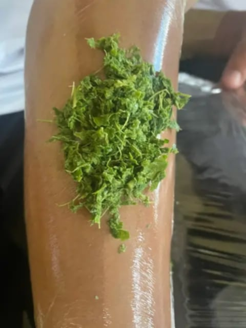
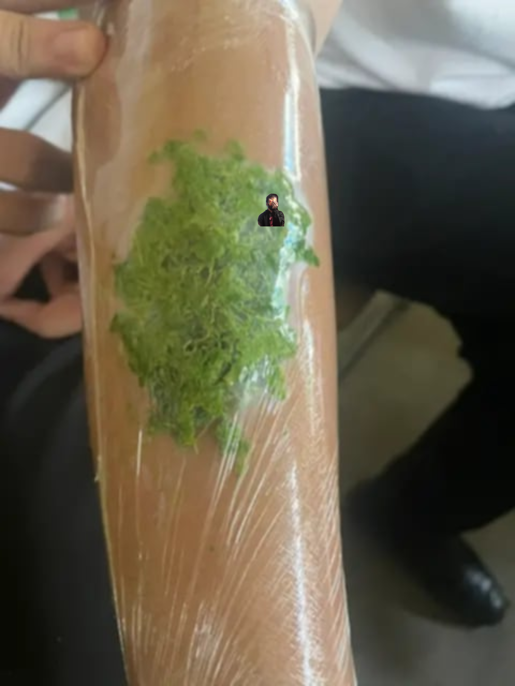
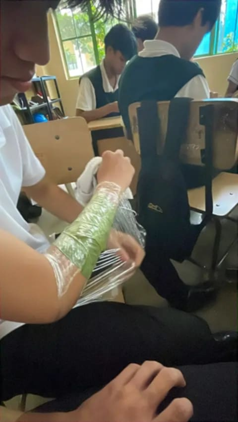
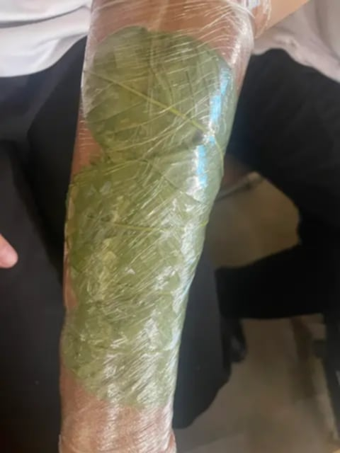

Dahon ng Bayabas
Ang dahon ng bayabas ay matagal nang ginagamit sa ilang tradisyonal na paraan bilang halamang pantulong sa pangangalaga ng maliliit na sugat. May mga likas na sangkap ang dahon na pinag-aaralan dahil sa posibleng antimicrobial properties nito.
Paalala: Ang tradisyonal na paggamit ng dahon ng bayabas ay hindi kapalit ng wastong pangunang lunas o medikal na paggamot. Para sa malalim, malubha, o may impeksiyong sugat, dapat humingi ng tulong sa isang health professional.
Pagpapakita ng Pamamaraan




Procedures
Pumili at maghugas ng malinis na dahon ng bayabas.
Dikdikin o durugin ang mga dahon.
Ilagay ang dinurog na dahon sa malinis na lalagyan.
Sa tradisyonal na paggamit, maaari itong ihanda para sa pangangalaga ng balat. Gayunman, ang paglalagay ng hilaw na dinurog na dahon sa bukas na sugat ay maaaring magdulot ng kontaminasyon.
Hugasan ang kamay pagkatapos humawak ng dahon o anumang materyal na ginamit sa paghahanda.
Advantages & Disadvantages
Advantages
- Maaaring makatulong sa paglilinis ng maliliit na sugat kapag ginamit nang naaangkop.
- May mga natural na sangkap na pinag-aaralan dahil sa posibleng epekto laban sa ilang mikrobyo.
- Madaling hanapin at karaniwang mura.
Disadvantages
- Maaaring magdulot ng pangangati o allergic reaction sa ilang tao.
- Hindi nito napapalitan ang wastong paggamot para sa malubhang sugat o impeksiyon.
- Kailangang maging malinis ang paghahanda upang mabawasan ang panganib ng kontaminasyon.
Benefits
Ang dahon ng bayabas ay maaaring magkaroon ng gamit sa tradisyonal na pangangalaga at pinag-aaralan para sa mga natural na antimicrobial properties nito. Gayunpaman, hindi ito dapat ituring na kapalit ng wastong pangunang lunas o gamot para sa malubhang sugat.